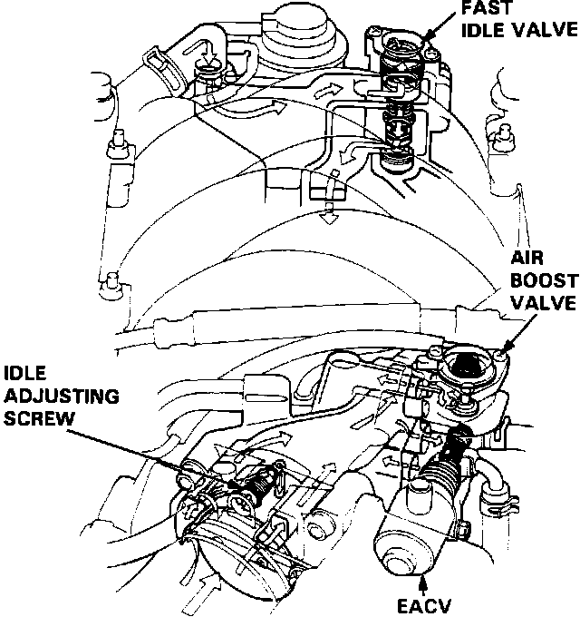

Auxiliary Air Valve (Idle Speed): Description and Operation
Idle Control System:

The fast idle valve supplies additional intake air to increase idle speed during warm-up. It is located at the top rear of the intake manifold assembly.
When engine coolant temperature is below 86 degrees F (30 degrees C), the valve opens and bypasses additional air to the intake manifold.
The bypass valve is mechanically controlled by a thermo-wax plunger. When the engine is cold, the coolant surrounding the thermo-wax contracts the plunger allowing additional air into the intake manifold. As the coolant temperature increases, the thermo-wax expands and the plunger closes off bypass air.